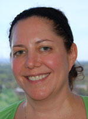
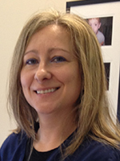
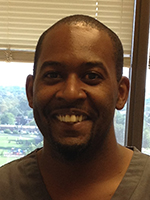

Dr. Elliot Abt, D.D.S., M.S., M.Sc.
Dr. Abt received a bachelor’s degree in molecular biology from the University of Wisconsin-Madison. He went on to graduate training and received a master’s degree in oral pathology and dental degree from the University of Illinois. Dr. Abt completed his dental residency training at Ravenswood and the University of Illinois Hospitals. From 1989-2004, Dr. Abt was the director of the dental residency programs at Ravenswood and Illinois Masonic Medical Center. He later went back to graduate school and received a master’s degree in evidence-based healthcare from Oxford University. Dr. Abt is an adjunct associate professor of oral medicine at the University of Illinois and directs the journal club for dental residents at Illinois Masonic Medical Center. He is on the Critical Review Panel of the American Dental Association (ADA), which maintains the Evidence-based Dentistry Website and mentors evidence reviewers in writing critical summaries of systematic reviews. Dr. Abt has published articles and book chapters on research design, statistical analysis, and critical appraisal of the dental literature and is a member-elect of the ADA Council on Scientific Affairs.
In his spare time, Dr. Abt enjoys spending time with his family, playing guitar, and following the Chicago Blackhawks.
Dr. Abt's CV
Dr. Paul J. Willis, D.D.S.
After completing his B.S. degree in chemical engineering at the University of Illinois – Urbana, Dr. Willis was involved in research in qualitative analysis in the Army for two years. He entered dental school at the University of Illinois Medical Center and graduated in 1967. He then opened a dental office on the north side of Chicago and became a faculty member at the University of Illinois where he taught operative dentistry. When the College of Dentistry established a comprehensive program for senior dental students, Dr. Willis became a member of the teaching group. He taught at the school for 30 years. He also worked part-time in the special Cleft Palate Center where patients who have facial and dental deformities are treated. During his career as a general dentist in both a private practice and university setting, Dr. Willis has had extensive experience in implant reconstruction, cosmetic dentistry and minor orthodontic treatment.
In Dr. Willis' spare time he enjoys spending time with his family, which includes 11 grandchildren. He also likes to stay active playing golf and tennis whenever he has the opportunity.
Dr. Ashley Kauffman, D.D.S.
Dr. Ashley Kauffman is proud to become a new member of Abt and Willis Family Dentistry. Dr. Kauffman completed her B.S. in Molecular and Cellular Biology at the University of Illinois in Urbana – Champaign. Dr. Kauffman earned her D.D.S. at the University of Illinois at Chicago, graduating in 2014. After completion of dental school, Dr. Kauffman moved on to finish a General Practice Residency in 2015 at Advocate Illinois Masonic Hospital in Chicago. Her residency included extensive training in Invisalign, implant dentistry, trauma, oral surgery, general dentistry, medically compromised populations and special needs care. Dr. Kauffman has continued her care for special needs patients one day a week at Misericordia Home in Chicago. She is an active member of the Chicago Dental Society and serves as the Dinner Chair for the Northside Branch. Dr. Kauffman sits on the New Dentist Committee for the Illinois State Dental Society. Her involvement with organized dentistry serves as a platform to help dentists provide the best care to our community. While she’s not at the office, she enjoys travelling, exploring Chicago restaurants, and spending time with family and friends. Dr. Kauffman recently got married this July to her wonderful husband Tim in Cancun.
Dr. Randall Hirsh, D.D.S.
Dr. Hirsh is an alumnus of the University of Illinois where he earned his bachelor's degree in Psychology and Biology in 1978, followed by his dental degree earned at the College of Dentistry. He has practiced general dentistry for over 28 years and is a current member of the Academy of General Dentistry.
His dedication to his patients does not end with maintaining their oral health. He strives to maintain a warm relationship with each and every patient, taking an interest in their lives and general health as well as keeping their teeth clean.
Dr. Hirsh has been married to his wife for 31 years and has a daughter enrolled at Loyola University Chicago. In his spare time he enjoys playing tennis, listen to a variety of music, and voraciously read. He enjoys reading so much that the staff couldn't resist getting him a shirt emblazoned with "I Read, Therefore I am".
Mary – Patient Coordinator
Mary started working at the practice in 1991 as a chair side, dental assistant. In 2002 she began to spend much of her time in the front office and is now the go-to person for any questions or concerns you may have. Her primary goal is to ensure all of your needs are met from the start of your visit with us to when you leave and even between visits. Each day she looks forward to working with her co-workers to make your visit a pleasant one.
Arlene – Receptionist
Arlene is one of the first smiling faces you will see when you walk into the office. She worked for 25 years as an administrative assistant for an investment firm before retiring. Seeking to keep active, she took a part time position with the practice and has enjoyed all ten years. In Arlene's spare time she enjoys spending time with her son's twins as their "Gramie", playing cards, taking exercise classes, and going to the theatre with friends.
Penni – Receptionist
Penni is another one of our friendly faces at the front desk. She has enjoyed working in the field of dentistry for over 18 years, both in general dentistry and orthodontics. She has been married for 32 years and has 2 daughters and a golden retriever. In her spare time she enjoys travel, playing tennis, reading and exercising.
Elissa – Receptionist
Elissa worked at the Jesse Brown VA Medical Center in their dental department for over 30 years as a dental assistant. She brings a wealth of dental knowledge and experience to our practice.
Rosey – Registered Dental Hygienist
Rosey has been working in the realm of dentistry since she was 19 years old. As a student of the dental hygiene program at Harper College, she was an assistant to Dr. Willis. She has developed many friendships with her patients and co-workers over the years, and enjoys not only her work, but socializing with patients when they visit. In her spare time she loves to travel and spend time with her extended family and friends all across the country.
Anne – Registered Dental Hygienist
Anne has been at our office for over 12 years and loves the relationships she has developed with her patients and co-workers. On her day off she volunteers at the Presbyterian Home and has a gluten-free baked goods booth at her local farmer's market during the summer months. She is married and has two teenagers and two dogs keeping her busy.
Alice – Registered Dental Hygienist
Alice graduated Dental Hygiene program with honors at Harper College in 2011. She started to work at our office in January 2013. She has two children. The whole family loves to travel to different Carribean islands and Europe to visit their family and friends. She loves meeting her patients, maintaining their beautiful smiles and perfecting their oral hygiene. In her spare time she enjoys spending time with her family, relaxes by watching movies, listening 80s music or reading.
Terri – Dental Assistant
Terri began working at our office in 1988, prior to that she worked as a cosmetologist. She enjoys spending time with the patients and assisting our dentists to do their best work. In her spare time she enjoys participating in dog agility classes and competitions throughout the United States with her husband and two dogs.
Jason – Dental Assistant
Jason has been a dental assistant for 3 years. He enjoys his co-workers and patients. They make the job easy! He has 2 daughters, Madison & Makayla. He enjoys spending time with his beautiful wife of 5 years, participating & watching sports.